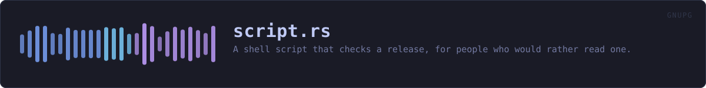

crates/veilvoice-gnupg/src/script.rs
veilvoice-gnupg · 283 lines · read the source here · or on GitHub
A shell script that checks a release, for people who would rather read one.
Why a script at all, when there is a verifier
veilvoice-verify does this check, and it does more of it: every extracted file, not just the archive. But it has the problem every such program has, and this project says so on the tab: it came out of the download it is checking. A tampered release ships a tampered verifier.
This is the answer to that. Sixty lines of shell, using gpg and sha256sum and nothing else, short enough that somebody can read the whole of it before running it. That is the point of it: not convenience, but that the thing doing the checking is not this project's code.
Why it is generated rather than committed
The fingerprint in it is veilvoice_check::FINGERPRINT, and the one thing that must never happen is a script checking against a fingerprint that has drifted from the one the project actually signs with. A committed script is a second copy of that string. This is written from the first copy, every time, so there is no second one to go stale.
What it deliberately does not do
It does not install anything, and it does not download the release. It checks files that are already in the current directory, and it says what to run if gpg is missing rather than running it. A verification script that fetched things would be a verification script with a network path in it.
WHAT THIS FILE CONTAINS
283 lines defining 4 functions (2 public), 1 type and 0 constants. Everything below is read out of the source, so it cannot disagree with the code.
The types it owns.
enum Flavourline 37 · Which system the script is being written for.
What happens when it runs. These are the ways in: public, and nothing else in this file calls them, so they are what an outside caller reaches first.
Flavour::file_nameline 64 · The name a reader would give the file.shellline 73 · The script, with the fingerprint compiled in from the one source of it.
WHAT CALLS WHAT
The functions this file defines, and the calls between them. An edge means the callee's name appears, called, inside the caller's body. This is a syntactic reading, not a type-resolved one.
The same graph as Mermaid source
%%{init: {"theme":"base","themeVariables":{"background":"#1a1b26","primaryColor":"#1f2335","primaryTextColor":"#c0caf5","primaryBorderColor":"#7aa2f7","secondaryColor":"#16161e","tertiaryColor":"#16161e","lineColor":"#737aa2","textColor":"#c0caf5","mainBkg":"#1f2335","nodeBorder":"#7aa2f7","clusterBkg":"#16161e","clusterBorder":"#2f3549","fontFamily":"ui-monospace, SFMono-Regular, Consolas, monospace","fontSize":"14px"}}}%%
flowchart TD
n_hash_check["Flavour::hash_check<br/>line 46"]
n_install_hint["Flavour::install_hint<br/>line 54"]
n_file_name(["Flavour::file_name<br/>line 64"])
n_shell(["shell<br/>line 73"])
click n_hash_check href "https://github.com/tilas01/veilvoice/blob/main/crates/veilvoice-gnupg/src/script.rs#L46" "open the source"
click n_install_hint href "https://github.com/tilas01/veilvoice/blob/main/crates/veilvoice-gnupg/src/script.rs#L54" "open the source"
click n_file_name href "https://github.com/tilas01/veilvoice/blob/main/crates/veilvoice-gnupg/src/script.rs#L64" "open the source"
click n_shell href "https://github.com/tilas01/veilvoice/blob/main/crates/veilvoice-gnupg/src/script.rs#L73" "open the source"
classDef entry fill:#1f2335,stroke:#7aa2f7,color:#c0caf5
class n_file_name,n_shell entry
classDef helper fill:#1f2335,stroke:#bb9af7,color:#c0caf5
class n_hash_check,n_install_hint helperThis site loads no third-party script, so it cannot run Mermaid; the diagram above is the same nodes and edges drawn by the generator instead. GitHub renders the source below directly.
ITEMS
| Item | Line | Documentation |
|---|---|---|
Flavour pub enum | 37 | Which system the script is being written for. |
Flavour::hash_check fn | 46 | The command that checks a file against SHA256SUMS. |
Flavour::install_hint fn | 54 | What to type if GnuPG is not installed. |
Flavour::file_name pub fn | 64 | The name a reader would give the file. |
shell pub fn | 73 | The script, with the fingerprint compiled in from the one source of it. |